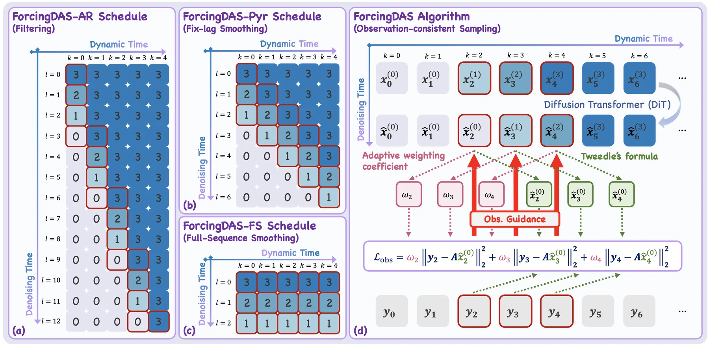
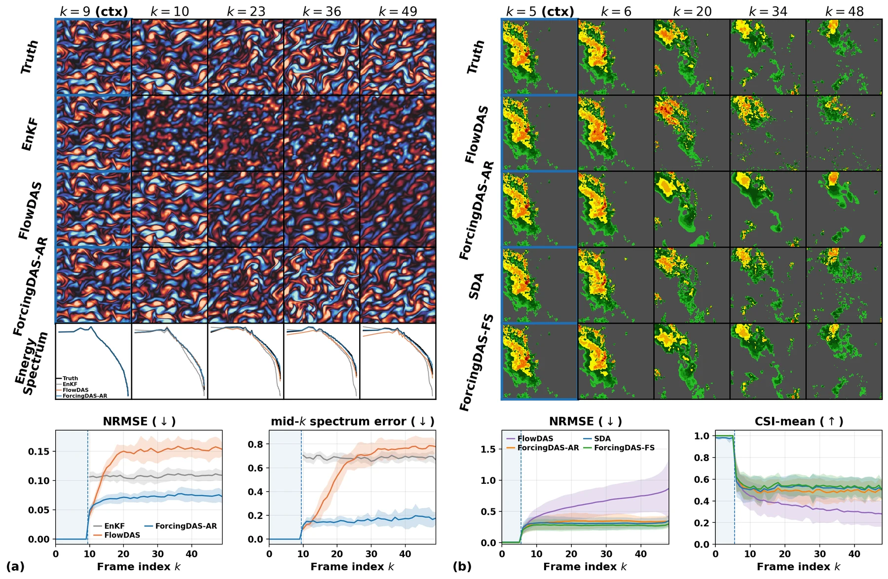
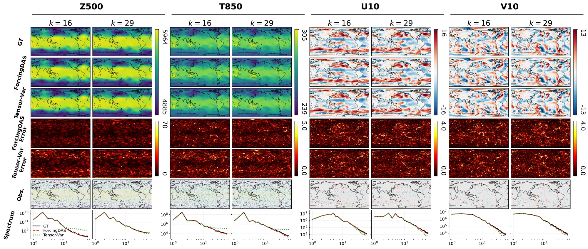

Data assimilation (DA) estimates the state of an evolving dynamical system from noisy, partial observations, and is widely used in scientific simulation as well as weather and climate science. In practice, filtering methods rely on frame-to-frame transition models. However, these models accumulate errors over long horizons, and they are further fragile when observations are non-Markovian. At the same time, learned DA methods typically commit to a single regime, either filtering (nowcasting, real-time forecasting) or smoothing (retrospective reanalysis), which splits what should be a shared prior across application-specific pipelines. To address both issues, we introduce ForcingDAS, a unified and robust DA framework. Built on Diffusion Forcing with an independent noise level assigned to each frame, ForcingDAS learns a joint-trajectory prior instead of frame-to-frame transitions. This allows it to capture long-horizon temporal dependencies and reduce error accumulation. In addition, the same trained model spans the full filtering to smoothing spectrum at inference time. Specifically, nowcasting, fixed-lag smoothing, and batch reanalysis are selected through the inference schedule alone, without retraining. We evaluate ForcingDAS on 2D Navier–Stokes vorticity, precipitation nowcasting, and global atmospheric state estimation. Across all settings, a single model is competitive with or outperforms both learned and classical baselines that are specialized for individual regimes.
ForcingDAS trains a single joint-trajectory diffusion prior in which every frame carries its own noise level. At inference, a scheduling matrix \(\mathbf{S}^{(u)}\) sets which diffusion step each frame is at, for each denoising iteration. Changing the single scalar \(u\), the uncertainty scale, changes the DA regime. The model is never retrained.
$$S^{(u)}_{k,\ell} = \mathrm{clip}\big(T - \ell + u\,(k-1),\; 0,\; T\big)$$Each frame fully denoises before the next one starts. This gives the posterior \(p(\mathbf{x}_k\mid\mathbf{y}_{1:k})\).
About \(\lceil T/u\rceil\) frames are active at once, at staggered noise levels. Observations of later frames refine the earlier frames in the window.
All frames are denoised together, and every observation jointly refines every frame.

ForcingDAS at a glance. (a–c) The scheduling matrix (rows: denoising iteration; columns: trajectory frame) selects the DA regime through \(u\). Active frames are outlined in red. (d) Observation-consistent sampling: each frame's Tweedie estimate is scored against its observation with a weight tied to that frame's noise level. The loss is backpropagated through the shared DiT backbone, which routes gradients from later observations to earlier active frames.
Every DA schedule is causally monotone: earlier frames are never noisier than later ones. CAT draws a fraction \(\rho\) of training noise vectors from sorted, staircase patterns, so the model trains on the clean-past, noisy-future conditioning it sees at inference. The remaining samples stay i.i.d. as a regularizer.
A frame's guidance weight depends on how reliable its denoised estimate is: \(w(t_k) = 1/\big(\sigma_y^2 + \gamma\,\tfrac{1-\bar\alpha_{t_k}}{\bar\alpha_{t_k}}\big)\). Nearly clean frames receive strong corrections and heavily noised frames receive weak ones.
These are held-out trajectories from the paper. Every method sees the same observations. Press play or drag the slider to step through frames, and switch to |Error| to see where each method drifts. The curve shows that trajectory's per-frame error. Click the curve to jump to a frame.
A blue outline marks clean context frames, which every method receives. ForcingDAS-AR and ForcingDAS-FS are the same trained model run with two different scheduling matrices.
All three benchmarks use the with-context protocol. Each entry is the mean ± std over 16 held-out trajectories or events, and every method assimilates identical observations. Bold marks the best result within each regime.
| Filtering | Fixed-lag smoothing | Full-sequence smoothing | ||||||
|---|---|---|---|---|---|---|---|---|
| Metric | FlowDAS | EnKF | ForcingDAS-AR | EnKS-FL | ForcingDAS-Pyr | EnKS-FS | SDA | ForcingDAS-FS |
| NRMSE ↓ | 0.141±0.006 | 0.108±0.003 | 0.071±0.004 | 0.113±0.003 | 0.057±0.003 | 0.116±0.003 | 0.075±0.002 | 0.067±0.003 |
| Spectrum err. mid-k ↓ | 0.607±0.044 | 0.684±0.009 | 0.160±0.019 | 0.530±0.013 | 0.218±0.015 | 0.430±0.016 | 0.193±0.017 | 0.139±0.004 |
| Spectrum err. all-k ↓ | 0.617±0.041 | 0.824±0.019 | 0.215±0.020 | 0.657±0.022 | 0.279±0.016 | 0.550±0.023 | 0.251±0.027 | 0.189±0.008 |
EnKF and EnKS run the exact PDE dynamics. ForcingDAS uses only a learned prior.
| SO-10% | SO-20% | SR2x | SR4x | |||||
|---|---|---|---|---|---|---|---|---|
| Method | NRMSE ↓ | CSI-m ↑ | NRMSE ↓ | CSI-m ↑ | NRMSE ↓ | CSI-m ↑ | NRMSE ↓ | CSI-m ↑ |
| Filtering | ||||||||
| FlowDAS | 0.616±0.213 | 0.403±0.020 | 0.479±0.183 | 0.481±0.023 | 0.363±0.199 | 0.637±0.017 | 0.504±0.189 | 0.471±0.024 |
| ForcingDAS-AR | 0.330±0.107 | 0.557±0.024 | 0.258±0.080 | 0.625±0.020 | 0.199±0.054 | 0.684±0.017 | 0.313±0.100 | 0.558±0.026 |
| Fixed-lag smoothing | ||||||||
| ForcingDAS-Pyr | 0.293±0.093 | 0.584±0.021 | 0.214±0.063 | 0.671±0.017 | 0.164±0.046 | 0.720±0.014 | 0.279±0.087 | 0.559±0.026 |
| Full-sequence smoothing | ||||||||
| SDA | 0.307±0.099 | 0.573±0.021 | 0.243±0.079 | 0.639±0.017 | 0.215±0.077 | 0.667±0.015 | 0.327±0.109 | 0.551±0.021 |
| ForcingDAS-FS | 0.274±0.080 | 0.592±0.021 | 0.219±0.062 | 0.662±0.017 | 0.169±0.046 | 0.712±0.014 | 0.269±0.076 | 0.585±0.022 |
CSI-m is the Critical Success Index averaged over VIL thresholds {16, 74, 133, 160, 181, 219}, pooled over events and frames. Its ± is the std over bootstrap resamples of the events.
| Z500 | T850 | U10 | V10 | |||||
|---|---|---|---|---|---|---|---|---|
| Method | NRMSE ↓ | ACC ↑ | NRMSE ↓ | ACC ↑ | NRMSE ↓ | ACC ↑ | NRMSE ↓ | ACC ↑ |
| Filtering | ||||||||
| 3D-Var | 0.067±0.003 | 0.964±0.004 | 0.114±0.003 | 0.868±0.020 | 0.478±0.015 | 0.792±0.012 | 0.536±0.014 | 0.810±0.012 |
| FlowDAS | 0.035±0.001 | 0.990±0.001 | 0.070±0.001 | 0.948±0.007 | 0.206±0.005 | 0.958±0.002 | 0.249±0.005 | 0.956±0.004 |
| ForcingDAS-AR | 0.026±0.000 | 0.994±0.001 | 0.054±0.001 | 0.970±0.004 | 0.159±0.003 | 0.975±0.001 | 0.193±0.004 | 0.974±0.002 |
| Fixed-lag smoothing | ||||||||
| ForcingDAS-Pyr | 0.023±0.001 | 0.996±0.000 | 0.048±0.001 | 0.976±0.003 | 0.148±0.003 | 0.979±0.001 | 0.181±0.004 | 0.977±0.002 |
| Full-sequence smoothing | ||||||||
| Tensor-Var | 0.034±0.001 | 0.990±0.001 | 0.063±0.002 | 0.957±0.005 | 0.155±0.003 | 0.976±0.001 | 0.184±0.003 | 0.976±0.002 |
| ForcingDAS-FS | 0.022±0.001 | 0.996±0.000 | 0.049±0.001 | 0.975±0.003 | 0.149±0.003 | 0.978±0.001 | 0.182±0.004 | 0.977±0.002 |
NRMSE is latitude-weighted and in z-score units. ACC is computed against the WeatherBench2 1990–2019 climatology. The 16 trajectories are drawn from the held-out 2016 evaluation year.

Navier–Stokes (left) and SEVIR (right). Rows show the ground truth and each method's estimate at selected frames. Below are per-frame error curves, as the mean ± 1 s.d. over all 16 held-out trajectories. The per-step learned filter's error grows over the window, while ForcingDAS's stays flat.

ERA5, all four variables. ForcingDAS-FS vs. Tensor-Var, both run as full-sequence smoothers. The bottom row is the power spectrum along latitude. ForcingDAS follows the true spectrum up to the highest wavenumbers.
@article{jia2026forcingdas,
title = {ForcingDAS: Unified and Robust Data Assimilation via Diffusion Forcing},
author = {Jia, Yixuan and Chen, Siyi and Pan, Yida and Li, Xiao and Shi, Lianghe and
Jung, Chanyong and Yuan, Haijie and Alkhouri, Ismail and Wu, Yue Cynthia and
Ravishankar, Saiprasad and Fessler, Jeffrey A. and Qu, Qing},
journal = {arXiv preprint arXiv:2605.14285},
year = {2026}
}